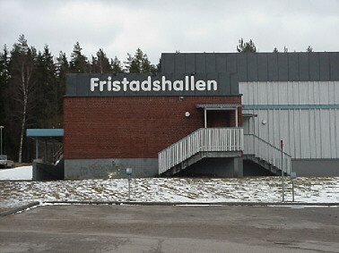

Fristads Styrkeklubb är en ideell förening i Fristad,
med ca. 250 - 300 st medlemmar. Klubbens målsättning
är att medlemmarna kan utföra styrketräning på motionsnivå,
med så bra utrustning som möjligt till en rimlig kostnad
Instruktion bli medlem i fristads Styrkeklubb
Våra öppettider: Måndag - Söndag: 05.00 - 22.00
Träningshallens adress: Fristadshallen, Sportvägen 8, 51334 Fristad
Vår Facebook sida: @fristadsgymmet
Priser:
Medlemsavgift: 200 kr per kalenderår (1 jan - 31 dec)
Aktivitetsavgifter:
Kalenderår: 800 kr (1 jan - 31 dec)
Går endast lösa helt kalenderår.
Passerkort: 300 kr engångsavgift så länge man är medlem
Om du förlorar ditt passerkort, avsutar ditt medlemsskap eller om kortet slutar att fungera får man köpa ett nytt passerkort i vår webshop
Kort uthämtas på Fristad Goif mot lämnande av kopia på faktura, eller kontakta styrelsen.
Medlemsförsäkran
Som medlem i Fristads Styrkeklubb förbinder jag mig att följa de stadgar som gäller för föreningen. Dessutom kommer jag att följa de ordningsregler som gäller i träningslokalen,
samt övriga utrymmen som disponeras av föreningen. De dopingbestämmelser som gäller för idrottsföreningar skall följas. Ertappas jag med användning av dopingpreparat eller andra otillåtna medel är jag medveten om att avstängning sker
från föreningsverksamheten under 2 år. Dessutom kan föreningen kräva kompensation för den skada jag åsamkat den. Jag förbinder mig också att inbetala medlemsavgift/träningsavgift i tid och är medveten om att jag utestängs ifrån träningslokalen om så ej göres. Jag har tagit del och accepterat ovanstående villkor vid ansökan om medlemskap